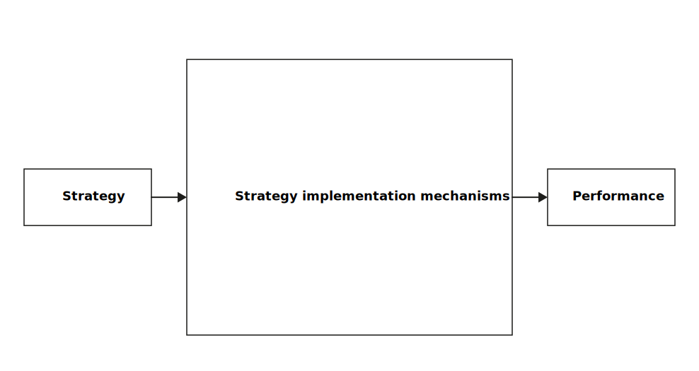

%%{init: {
'theme': 'base',
'themeVariables': { 'fontFamily': 'Arial' },
'flowchart': { 'curve': 'linear' }
}}%%
flowchart TD
A[Total Variance Profit]
A --> B[Other costs]
A --> C[Manufacturing costs]
A --> D[Revenue]
B --> B1[Administration]
B --> B2[Marketing & Sales]
B --> B3[R&D]
C --> C1[Variable costs]
C --> C2[Fixed costs]
C1 --> C1a[Material]
C1 --> C1b[Direct labor]
C1 --> C1c[Variable overhead]
D --> D1[Selling price]
D --> D2[Volume / Mix]
D2 --> D2a[Market share]
D2 --> D2b[Market size]
%% White background and horizontal centering
classDef default fill:#ffffff,stroke:#000,stroke-width:1px,color:#000;
%% Bold root + first level
classDef bold font-weight:bold,stroke-width:2px;
class A,B,C,D bold;
Corporate Performance Management
Strategy and Performance Management
Andy Weeger
Neu-Ulm University of Applied Sciences
August 8, 2025
Learning Objectives
After this unit, you should have a solid understanding of
- the relationships between key financial statements and their role in performance measurement;
- financial ratio analysis and time value of money concepts for investment evaluation;
- theoretical foundations explaining why performance management works and fails;
- agency theory, motivation theory, and political perspectives on performance measurement;
- the management control framework linking strategy formulation to task execution;
- different types of responsibility centers and their appropriate performance measures;
- planning and budgeting processes that translate strategy into operational targets;
- variance analysis methodology for systematic performance diagnosis;
- and common performance management frameworks.
Introduction
Prologue
What gets measured gets managed — even when it’s pointless to measure and manage it, and even if it harms the purpose of the organisation to do so. Simon Caulkin, management editor of the Guardian summarizing Ridgway (1956)
Concepts
Corporate performance management (CPM) is an organization-wide approach to steering results across both financial and non-financial dimensions.
It integrates goals, measures, feedback, and learning at individual, team, and enterprise levels to ensure strategy is executed effectively (Presti, 2021).
Management control is the subset of CPM concerned with processes by which managers influence other members of the organization to implement the organization’s strategies (Anthony & Govindarajan, 2007).
Theoretical foundations
Performance management bridges the strategy–implementation gap by providing systematic measurement, behavioral incentives, and feedback mechanisms that ensure strategic objectives are achieved.
But these levers do not operate in isolation — their design must be grounded in an understanding of how people, systems, and incentives interact in real organizations.
Agency theory
Agency theory explains how goal conflicts between principals and agents can be managed through performance measurement and incentive design to align self-interested behaviors with organizational objectives (Eisenhardt, 1989).
- Problem: Information asymmetry and moral hazard create misaligned interests.
- Solutions: Outcome-based contracts (pay for results) vs. behavior-based contracts (monitor actions) and risk sharing based on measurability & agent risk tolerance
- Limits: Overemphasis on extrinsic incentives; ignores intrinsic motivation.
Motivation theory
Performance management effectiveness depends on expectancy (effort-performance link), instrumentality (performance-reward link), and valence (reward value) relationships (Porter & Lawler, 1968).
Motivation varies across individuals and cultures. Some respond strongly to monetary incentives, others to recognition or development opportunities. Performance management systems should thus allow customization within a consistent overall framework.
Political and power perspectives
Performance measurement systems are not neutral — they can reinforce or challenge power structures by legitimizing authority, influencing resource allocation, and framing organizational discourse (Burchell et al., 1980; Hopwood, 1976).
Performance measurement dysfunctions
Common dysfunctions that can undermine performance management effectiveness:
- Tunnel vision: Overemphasis on measured areas at expense of unmeasured aspects
- Gaming: Manipulating measures rather than improving underlying performance
- Short-termism: Focus on immediate results at expense of long-term value creation
- Suboptimization: Local optimization that undermines overall organizational performance
- Rigidity: Inability to adapt measures as circumstances change
Financial reports
Overview
Companies report performance through three primary financial statements: Profit & Loss Statement, Balance Sheet, and Cash Flow Statement.
Understanding these reports is essential for performance measurement as they provide the raw data for most financial performance indicators used in management control systems.
Profit & Loss (P&L) Statement
Simple structure by expense type
| Item |
|---|
| Revenue |
| - Material costs |
| - Salaries & wages |
| - Rent |
| - Other expenses |
| = EBITDA (Earnings Before Interest, Taxes, Depreciation, and Amortization) |
| - Depreciation & Amortization |
| = EBIT (Earnings Before Interest and Taxes) |
| - Interest |
| = EBT (Earnings Before Taxes) |
| - Taxes |
| = Net income |
Multi-step income statement
| Item |
|---|
| Revenue |
| - Cost of Goods Sold (COGS) |
| = Gross Profit |
| Other operating expenses |
| - Selling, General & Administration (SG&A) |
| - Research & Development |
| - Others |
| = Operating Income or Loss |
| + Total other income from continuing operations1 |
| = EBIT from continuing operations |
| + Financial income |
| - Financial expenses |
| = Income before taxes from continuing operations |
| - Taxes |
| = Net Income from continuing operations |
| + Income or loss from discontinued operations |
| = Net income |
Balance Sheet
Assets
| Category | Description |
|---|---|
| Non-current (fixed) Assets | Long-term assets, e.g., real estate, machines, patents/licences, and property, plant & equipment |
| Inventories | Finished goods, raw materials |
| Accounts receivable | Invoices to customers not yet paid |
| Cash & cash equivalents | Cash, balances of current bank accounts, sovereign bonds |
Current assets include inventories, accounts receivable, and cash & cash equivalents.
Liabilities & Equity
| Category | Description |
|---|---|
| Equity | Money paid in by shareholders plus retained profits minus accumulated losses |
| Non-current liabilities | Long-term obligations, e.g., bonds, long-term bank loans |
| Current liabilities | Short-term obligations, e.g., open invoices from suppliers, bank overdraft |
Equity is the delta between the sum of all assets and the sum of all debt.
Debt includes both non-current and current liabilities.
Cash Flow Statement
Components of a Cash Flow Statement
Cash from operating activities
Mainly revenues and cash flows due to expenditures (OPEX):
- Cash inflow from revenues
Shows in P&L as revenue (timing may differ) - Cash outflow for salaries, materials, rent, etc.
Shows in P&L as expenses (timing may differ)
Cash from investing activities
Mainly capital expenditures (CAPEX):
- Cash outflow for investments in non-current assets
Not in P&L; affects Balance Sheet - Cash inflow when non-current assets are sold
Non-current assets hit P&L only via depreciation
Cash from financing activities
Any cash flow due to financing:
- Cash outflow for interest
Expense in P&L - Cash outflow for loan repayment
Not in P&L; Balance Sheet only - Cash inflow from new loans
Balance Sheet only - Cash inflow from financial investments
Can be in P&L (non-operating income)
Cash flows either show up in the P&L (as revenues or expenses, possibly in different periods)
or appear as changes in the Balance Sheet.
Key financial ratios
Categories
Financial performance analysis relies on systematic ratio analysis:
- Profitability — how much value do we create?
- Liquidity — can we meet near-term obligations?
- Efficiency — how well do we use assets?
- Leverage — how risky is our capital structure?
Overview
| Category | Ratio | Description | Formula | Usage |
|---|---|---|---|---|
| Profitability | Gross Margin | % of revenue left after COGS | (Revenue − COGS) / Revenue | Assess core production profitability |
| EBITDA Margin | % after operating costs excl. D&A | EBITDA / Revenue | Compare core operating profitability | |
| Operating Margin | % after operating expenses | EBIT / Revenue | Evaluate efficiency before financing/tax | |
| Net Margin | % after all expenses | Net Income / Revenue | Measure overall profitability | |
| ROA | Return on assets | Net Income / Total Assets | Asset efficiency in generating profit | |
| ROE | Return on equity | Net Income / Equity | Returns to shareholders | |
| ROCE | Return on capital employed | EBIT / (Total Assets − Current Liabilities) | Return on long-term capital | |
| Liquidity | Current Ratio | Ability to meet short-term liabilities | Current Assets / Current Liabilities | Short-term solvency |
| Quick Ratio | Liquidity excluding inventory | (CA − Inventory) / CL | Liquidity in urgent cash need | |
| Operating Cash Flow Ratio | Cash flow coverage of CL | Operating Cash Flow / CL | Cash-based liquidity measure | |
| Efficiency | Asset Turnover | Revenue per € of assets | Revenue / Total Assets | Asset utilization |
| Inventory Turnover | Times inventory sold | COGS / Avg Inventory | Stock level optimization | |
| Receivables Turnover | Times receivables collected | Net Credit Sales / Avg A/R | Collection efficiency | |
| Payables Turnover | Times payables settled | COGS / Avg A/P | Payment speed | |
| Leverage | Debt-to-Equity | Debt proportion to equity | Total Debt / Total Equity | Financial leverage |
| Equity Ratio | Assets financed by equity | Equity / Total Assets | Capital structure health | |
| Interest Coverage | EBIT coverage of interest | EBIT / Interest Expense | Debt service capacity | |
| DSCR | Cash available for debt service | Operating CF / Debt Service | Lender risk assessment |
Days-based efficiency ratios
| Ratio | Description | Formula | Usage |
|---|---|---|---|
| Days Sales Outstanding (DSO) | Avg. days to collect receivables | (Avg A/R / Net Credit Sales) × 365 | Credit policy effectiveness |
| Days Inventory Outstanding (DIO) | Avg. days inventory is held | (Avg Inventory / COGS) × 365 | Stock management efficiency |
| Days Payable Outstanding (DPO) | Avg. days to pay suppliers | (Avg A/P / COGS) × 365 | Supplier payment terms optimization |
| Cash Conversion Cycle (CCC) | Net days cash tied up in operations | DIO + DSO − DPO | Overall working capital efficiency |
Turnover vs day-based ratios
Turnover ratios (Table 1) express frequency (times per period).
Days-based ratios (Table 2) express duration (average days).
Both describe the same reality from different angles:
- High turnover ↔︎ low days outstanding (good)
- Low turnover ↔︎ high days outstanding (needs improvement)
Time value of money
Overview
Money has different values at different points in time due to its earning potential — a euro today is worth more than a euro tomorrow because of:
- Opportunity cost: money can be invested and earn a return.
- Risk: future cash flows may be uncertain.
- Inflation: purchasing power decreases over time.
- Preference: people prefer current consumption to future consumption.
Key idea: to compare cash flows at different times, we convert them to a common basis — either all future values or all present values.
Future value (FV)
The formula for calculating the future value (FV) from the present value (PV) is as follows:
\(FV = PV \times (1 + i)^n\)
- \(PV\) = present value
- \(i\) = interest rate per period
- \(n\) = number of periods
Example:
FV of 1,000 € in 3 years given a 5% annual interest rate:
\(FV = 1000 \times (1 + .05)^3 = 1,157.63\)
Present value (PV)
Formula to discount the present value (PV) from a future value (FV) is as follows:
\(PV = \frac{FV}{(1 + i)^n}\)
- \(PV\) = present value
- \(i\) = interest rate per period
- \(n\) = number of periods
Example:
PV of 1,000 received in 3 years given a 5% annual interest rate:
\(PV = \frac{1000}{(1.05)^3} = 863.84\)
Interest rates
There are two differnt interest rates being used:
- Nominal interest rate: stated annual rate, not accounting for compounding frequency.
- Effective annual rate (EAR): accounts for intra-year compounding.
\(EAR = \left( 1 + \frac{i_{nom}}{m} \right)^m - 1\)
- \(i_{nom}\) = nominal annual interest rate
- \(m\) = number of compounding periods per year
Example:
Nominal rate 12%, monthly compounding (\(m = 12\)):
\(EAR = (1 + 0.12/12)^{12} - 1 \approx 12.68\%\)
Annuities
An annuity is a series of equal payments or receipts occurring at regular intervals.
Future value of an annuity:
What is the future value of a constant annual cash flow have at the end of the period? \(FV_{OA} = PMT \times \frac{(1 + i)^n - 1}{i}\)
Present value of an annuity:
What is the present value today of a future annual cash flow for multiple years? \(PV_{OA} = PMT \times \frac{1 - (1 + i)^{-n}}{i}\)
\(PMT\) = payment per period
Net Present Value (NPV)
Net present value (NPV) is a financial metric used to evaluate the profitability of an investment or project.
Steps:
- Estimate cash inflows and outflows over time.
- Chose a discount rate2 and discount each cash flow to present value.
- Sum present values — if positive, project adds value.
\(NPV = \sum_{t=0}^n \frac{CF_t}{(1 + r)^t}\)
- \(CF_t\) = cash flow in period \(t\)
- \(r\) = discount rate
NPV example
What is the NPV of an investment with cash flows shown below if the Weigthed Average Cost of Capital (WACC) is 10%?
| Year | Cash Flow (€) | Discount Factor (10%) | Present Value (€) |
|---|---|---|---|
| 0 | -10,000 | 1.0000 | -10,000.00 |
| 1 | 3,000 | 0.9091 | 2,727.27 |
| 2 | 4,000 | 0.8264 | 3,305.79 |
| 3 | 5,000 | 0.7513 | 3,756.57 |
| NPV | -210.37 |
Decision: Since NPV < 0, the project would not be accepted at a 10% WACC.
Cost types
Understanding different cost types is essential for designing budgets, conducting variance analysis, and making informed resource allocation decisions within performance management systems.
- Direct vs. indirect costs: Traceable to specific products/services (direct) versus allocated overhead (indirect)
- Fixed vs. variable costs: Remain constant (fixed) versus change with activity levels (variable)
- Standard costing: Predetermined benchmarks for materials, labor, and overhead
- Activity-based costing (ABC): allocates overhead using cost drivers rather than volume
Management controls
Management control x strategy


Management control framework
Planning and budgeting process
The planning and budgeting cycle translates strategic objectives into operational plans through resource allocation and performance targets that guide organizational action (Anthony & Govindarajan, 2007).
Responsibility center design
Organizations structure accountability through different responsibility center types:
Cost centers focus on expense control, revenue centers on sales generation, profit centers on bottom-line results, and investment centers on return on invested capital (Anthony & Govindarajan, 2007).
The choice of center type determines KPI sets and bonus formulas; e.g., ROI/EVA for investment centers versus margin or contribution for profit centers.
Variance analysis
Variance analysis compares actual results to planned targets to understand the causes of performance deviations and guide corrective action (Anthony & Govindarajan, 2007).
Variance analysis disaggregration
Financial performance frameworks
Overview
Du Pont Pyramid, Tableau du Bord, Balanced Scorecard, Performance Pyramid, and Performance Prism.
Group work
Form small groups of 3 to 4 students, do a research on one of the frameworks and to prepare a short presentation (5 minutes) that summarizes the key-tenets of the framework.
Prepare yourself to present your insights.
Framework evolution
As organizations mature, control systems evolve from financial-only to integrated, adaptive systems.
Stages:
- Financial control focus (DuPont)
- Balanced approaches (BSC)
- Value-based management (EVA)
- Stakeholder integration (Performance Prism, Integrated Reporting)
- Dynamic, AI-enabled, real-time controls
Choose frameworks appropriate to current maturity and adaptability needs.
Key takeaways
- Financial statement literacy underpins all performance measurement
- Ratios answer four questions: value, liquidity, efficiency, risk
- TVM & investment appraisal connect performance to value creation
- Theory explains why measures work (or fail)
- Dysfunction prevention & politics-awareness make systems robust
- Control frameworks connect strategy to operations
- Responsibility centers, budgeting, and variance are core CPM tools
Review and consolidation
The following questions are designed to review and consolidate what you have learned and are a good starting point for preparing for the exam.
- Analyze how agency theory explains the need for performance measurement systems. Describe how motivation theory informs performance system design.
- Identify and explain two major performance measurement dysfunctions. Propose prevention strategies for each dysfunction.
- Explain how performance measurement systems create power dynamics in organizations. Analyze both positive and negative political uses of measurement.
- Explain how the three primary financial statements interrelate and support performance measurement. Calculate and interpret key financial ratios for a given company.
- Apply NPV to evaluate investment proposals. Explain the components of WACC and their impact on investment decisions.
- Differentiate between direct/indirect and fixed/variable costs. Explain how cost behavior affects responsibility center performance measurement.
- Differentiate between strategy formulation, management control, and task control. Explain how management control bridges strategy and operations.
- Design appropriate responsibility centers for different organizational contexts. Explain the controllability principle and its implications.
- Describe the planning and budgeting process and its role in strategy implementation. Compare annual versus rolling budget approaches.
- Conduct comprehensive variance analysis for a business unit, decomposing total variance into price, volume, mix, and cost components.
- Compare and contrast DuPont analysis, EVA, and Balanced Scorecard for different organizational scenarios. Recommend which framework(s) would be most appropriate and why.
- Analyze how performance measurement systems should evolve as organizations mature and environments change. Provide specific examples of adaptive changes.
Homework
Come prepared to the case study.
- Review all case study tasks.
- Research and collect the relevant public data from the provided sources.
- Organise your findings in a personal data pack that facilitates group analysis (financial figures, extracted KPIs, relevant excepts)
Estimated time: 60–90 minutes total
Tip: Use the links in the lecture notes to speed up your search.
Q&A
Literature
Anthony, R. N., & Govindarajan, V. (2007). Management control systems (12th ed.). McGraw-Hill.
Anthony, R. N., & Govindarajan, V. (2014). Management control systems. McGraw-Hill Education.
Burchell, S., Clubb, C., Hopwood, A. G., Hughes, J., & Nahapiet, J. (1980). The roles of accounting in organizations and society. Accounting, Organizations and Society, 5(1), 5–27. https://doi.org/10.1016/0361-3682(80)90017-3
Deci, E. L., & Ryan, R. M. (1985). Intrinsic motivation and self-determination in human behavior. Springer Science+Business Media. https://doi.org/10.1007/978-1-4899-2271-7
Eisenhardt, K. M. (1989). Agency theory: An assessment and review. Academy of Management Review, 14(1), 57–74. https://doi.org/10.5465/amr.1989.4279003
Hopwood, A. G. (1976). Accounting and human behaviour. In Accounting and human behaviour. Haymarket Publishing.
Locke, E. A., & Latham, G. P. (1990). A theory of goal setting and task performance. Prentice Hall.
Porter, L. W., & Lawler, E. E. (1968). Managerial attitudes and performance. R. D. Irwin.
Presti, C. (2021). Performance management as a part of the management control system. In Integrating performance and risk in a management control system (pp. 43–63). Springer. https://doi.org/10.1007/978-3-030-87082-9_3
Ridgway, V. F. (1956). Dysfunctional consequences of performance measurements. Administrative Science Quarterly, 1(2), 240–247.
Vroom, V. H. (1964). Work and motivation. Wiley.
Footnotes
Earnings that are not part of the company’s main operating activities, but still come from business lines the company is keeping (e.g., rental income)
The discount rate is the rate of return you could earn on an alternative investment with a similar level of risk. It’s used to “discount” future cash flows back to their present-day value. A common discount rate is a company’s weighted average cost of capital (WACC).